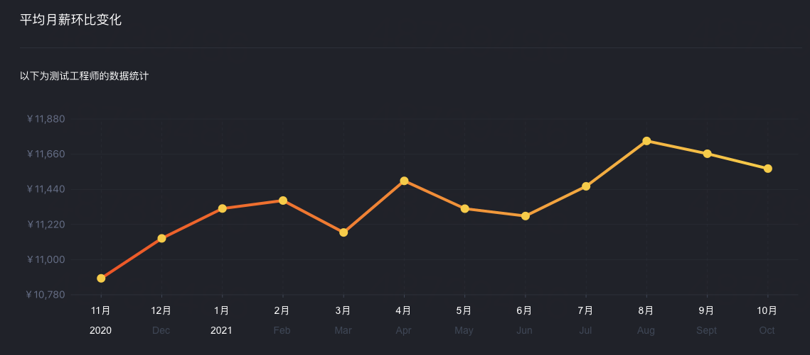

学习目标
简单朴素的一句话：让每一位同学都能够成为软件测试工程师，获得高薪工作。
核心亮点
专注
专注培养行业顶尖测试工程师
陪伴
学习仅仅是个开始，我们将一直陪伴你的全部职业生涯
名师
授课老师曾在一线大厂任资深工程师，达年薪百万
薪资待遇

统计数据来自国内某直接跟老板谈的招聘平台，以上仅为初级测试工程师的薪资待遇
适合谁学
- 1、对软件技术有浓厚兴趣
- 2、渴望成为软件测试工程师
- 3、渴望获得高薪工作
- 4、能够抽出一定的时间进行专注的学习
老师介绍

周景阳，某互联网科技公司创始人。曾任百度资深工程师、国美大数据中心技术负责人等，从业10余年。对软件测试、软件开发、大数据、数据分析、人工智能等方向拥有丰富的经验。
截止目前，拥有8年授课经验，广受学员好评，授课风格幽默、且能够结合行业整体案例给学员带来立体般的感受。
教过的学生们亲切的称呼为大周老师，希望未来你也能够成为大周老师的一名学生，共同斩获高薪offer！！
截止目前，拥有8年授课经验，广受学员好评，授课风格幽默、且能够结合行业整体案例给学员带来立体般的感受。
教过的学生们亲切的称呼为大周老师，希望未来你也能够成为大周老师的一名学生，共同斩获高薪offer！！
课程大纲
-
第一阶段:夯实基础，入门测试1、软件测试是什么？
2、软件测试的要求是什么？
3、软件测试行业及岗位发展
4、软件测试主流技能
5、常见测试岗位分类
6、软件质量模型
7、项目管理工具
8、项目生命周期
9、缺陷分类
10、缺陷管理工具
学习收获 : 掌握主流项目管理方法，能够独立进行项目用例设计，执行功能测试，管理Bug等。 -
第二阶段:系统实战，实现跨越1、企业级操作系统有哪些？
2、Linux操作系统的应用场景
3、虚拟机搭建
4、基于Linux的基本操作
5、进程的概念
6、什么是服务？
7、计算机网络
8、Linux上的服务搭建
9、用户与用户权限
10、【实战】电商项目的全流程测试
学习收获 : 掌握Linux操作系统，能够独立进行项目部署，并积累软件测试项目实战经验。